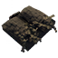
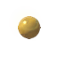
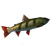
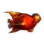
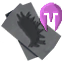
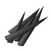
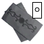

Rustninger, skjold og tilbehør
Rustninger, skjold og tilbehør i Valheim – 148 gjenstander med biom, funnsted, nødvendig verktøy, oppskrift og bruk.
Ingen gjenstand funnet.
 Askelandskappe
Askelandskappe
Metalltrådene i denne kappa skaper et innviklet mønster, som en skjebne vevd av Nornene selv.
Slik får du den
- Lag: Svartsmie (nivå 3) av 6 ×
 Asksvinskinn, 2 ×
Asksvinskinn, 2 ×  Morgensene, 5 ×
Morgensene, 5 ×  Flammetall · per oppgradering: 2 × Asksvinskinn
Flammetall · per oppgradering: 2 × Asksvinskinn
 Asks brynje
Asks brynje
Den første mannen i Midgard visste hvordan han skulle beskytte seg selv, kanskje med ei brynje akkurat som denne.
Slik får du den
- Lag: Svartsmie (nivå 3) av 15 ×
 Lintråd, 4 ×
Lintråd, 4 ×  Loxeskinn, 10 × Asksvinskinn · per oppgradering: 10 × Lintråd, 2 × Loxeskinn, 5 × Asksvinskinn
Loxeskinn, 10 × Asksvinskinn · per oppgradering: 10 × Lintråd, 2 × Loxeskinn, 5 × Asksvinskinn
 Asks bukser
Asks bukser
Den første mannen i Midgard foretrakk å trå forsiktig. En som kler seg i denne buksa kan kanskje lære en ting eller to.
Slik får du den
- Lag: Svartsmie (nivå 3) av 15 × Lintråd, 4 × Loxeskinn, 10 × Asksvinskinn · per oppgradering: 10 × Lintråd, 2 × Loxeskinn, 5 × Asksvinskinn
 Asks Hette
Asks Hette
Som første mann i Midgard visste Ask hvor viktig det var å ikke tiltrekke for mye oppmerksomhet.
Slik får du den
- Lag: Svartsmie (nivå 3) av 15 × Lintråd, 4 × Loxeskinn, 10 × Asksvinskinn · per oppgradering: 10 × Lintråd, 2 × Loxeskinn, 5 × Asksvinskinn
 Asksvinskappe
Asksvinskappe
Denne kappa rir på vinden, ikke ulikt et seilskip.
Slik får du den
- Lag: Galderbord (nivå 2) av 6 × Asksvinskinn, 2 × Morgensene · per oppgradering: 2 × Asksvinskinn
 Bjørnens klede
Bjørnens klede
Det dekker det viktigste, men ikke mye annet.
Slik får du den
- Lag: Sløydbenk (nivå 2) av 5 ×
 Bjørneskinn, 4 ×
Bjørneskinn, 4 ×  Blåbær · per oppgradering: 2 × Bjørneskinn, 1 × Blåbær
Blåbær · per oppgradering: 2 × Bjørneskinn, 1 × Blåbær
 Bjørnens like
Bjørnens like
Hvis slike snodige mønstre kan beskytte krigere fra fjerne land, så kan de helt sikkert beskytte deg og.
Slik får du den
- Lag: Sløydbenk (nivå 2) av 5 × Bjørneskinn, 2 ×
 Bjørnelabb, 4 × Blåbær · per oppgradering: 2 × Bjørneskinn, 1 × Blåbær
Bjørnelabb, 4 × Blåbær · per oppgradering: 2 × Bjørneskinn, 1 × Blåbær
 Bjørnens manke
Bjørnens manke
La bjørnens ville vrede fortære deg.
Slik får du den
- Lag: Sløydbenk (nivå 2) av 5 × Bjørneskinn, 1 ×
 Bjørnetrofé · per oppgradering: 2 × Bjørneskinn
Bjørnetrofé · per oppgradering: 2 × Bjørneskinn
 Blå kjole med perler
Blå kjole med perler
En flott blå kjole, med perler og brosje i bronse. Klar til fest!
Slik får du den
- Kjøp: Hildir · 550 mynter · etter at du har levert Hildirs bronsekiste
 Blå kjole med sjal
Blå kjole med sjal
En blå kjole, med et grønt sjal over skuldrene. Både varmt og stilig!
Slik får du den
- Kjøp: Hildir · 450 mynter · etter at du har levert Hildirs sølvkiste
 Blå tunika med kappe
Blå tunika med kappe
En blå tunika, med ei moteriktig kappe lagd av behagelig brun ull.
Slik får du den
- Kjøp: Hildir · 450 mynter · etter at du har levert Hildirs sølvkiste
 Blå tunika med perler
Blå tunika med perler
En blå tunika med perler og sølvsmykker. Med denne her får du nok oppmerksomhet fra andre vikinger.
Slik får du den
- Kjøp: Hildir · 550 mynter · etter at du har levert Hildirs bronsekiste
 Blått skaut
Blått skaut
Et blått, praktisk skaut.
Slik får du den
- Kjøp: Hildir · 200 mynter · etter at du har levert Hildirs messingkiste
 Bondekjole
Bondekjole
Når man er ute på jordet, må man kle seg deretter. Denne kjolen dekker til knærne mens du jobber.
Slik får du den
- Kjøp: Hildir · 550 mynter · etter at du har levert Hildirs messingkiste
 Bondetunika
Bondetunika
Når man er ute på jordet, må man kle seg deretter. En kortere tunika slipper inn en frisk bris.
Slik får du den
- Kjøp: Hildir · 550 mynter · etter at du har levert Hildirs messingkiste
 Breastplate of the Protector
Breastplate of the Protector
Fur and hide and metal all work in tandem to ward off an enemy's blows.
Slik får du den
- Lag: Svartsmie (nivå 4) av 20 ×
 Bloodgold, 1 ×
Bloodgold, 1 ×  Mould: Breastplate of the Protector, 8 ×
Mould: Breastplate of the Protector, 8 ×  Moose Hide, 4 ×
Moose Hide, 4 ×  Lærstropper · per oppgradering: 15 × Bloodgold, 3 × Moose Hide, 3 × Lærstropper
Lærstropper · per oppgradering: 15 × Bloodgold, 3 × Moose Hide, 3 × Lærstropper - Stek: Froststøper av
 Cast: Breastplate of the Protector
Cast: Breastplate of the Protector
 Bronseanheng
Bronseanheng
Et nydelig anheng, som bærer utholdenhetstyrken til en bjørn.
Slik får du den
- Lag: Smie av 5 ×
 Bronse, 1 × Bjørnetrofé, 3 ×
Bronse, 1 × Bjørnetrofé, 3 ×  Rubin
Rubin
 Bronsebuklare
Bronsebuklare
Et skjold av polert bronse, godt for å vende et sverd eller to.
Slik får du den
 Bronsehjelm
Bronsehjelm
Denne holder hjernen din inni hodeskallen.
Slik får du den
- Lag: Smie av 5 × Bronse, 2 ×
 Hjorteskinn · per oppgradering: 3 × Bronse
Hjorteskinn · per oppgradering: 3 × Bronse
 Bronsepansrede bukser
Bronsepansrede bukser
Plater av bronse til å beskytte bena dine.
Slik får du den
- Lag: Smie av 5 × Bronse, 2 × Hjorteskinn · per oppgradering: 3 × Bronse
 Bronsepansret tunika
Bronsepansret tunika
Et kyrass av hamret bronse.
Slik får du den
- Lag: Smie av 5 × Bronse, 2 × Hjorteskinn · per oppgradering: 3 × Bronse
 Brun kjole med perler
Brun kjole med perler
En flott brun kjole med perler og brosje i sølv. Klar til fest!
Slik får du den
- Kjøp: Hildir · 550 mynter · etter at du har levert Hildirs bronsekiste
 Brun kjole med sjal
Brun kjole med sjal
En brun kjole, med et matchende sjal over skuldrene. Både varmt og stilig!
Slik får du den
- Kjøp: Hildir · 450 mynter · etter at du har levert Hildirs sølvkiste
 Brun pelslue
Brun pelslue
En varm pelslue, lagd fra lær av høyeste kvalitet.
Slik får du den
- Kjøp: Hildir · 200 mynter · etter at du har levert Hildirs messingkiste
 Bundet skjold
Bundet skjold
Bundet med bånd av jern, en sann krigers følgesvenn.
Slik får du den
 Cape of the Caller
Cape of the Caller
A strange magic is woven into this cape, making it both light and warm.
Slik får du den
- Lag: Galderbord (nivå 4) av 6 ×
 Seal Pelt, 2 ×
Seal Pelt, 2 ×  Nornathread, 5 × Bloodgold, 15 ×
Nornathread, 5 × Bloodgold, 15 ×  Raffinert eiter · per oppgradering: 3 × Seal Pelt, 1 × Nornathread, 2 × Bloodgold, 5 × Raffinert eiter
Raffinert eiter · per oppgradering: 3 × Seal Pelt, 1 × Nornathread, 2 × Bloodgold, 5 × Raffinert eiter
 Chestpiece of the Vanguard
Chestpiece of the Vanguard
Expertly crafted leather armour, offering excellent protection without limiting a warrior's movements.
Slik får du den
- Lag: Svartsmie (nivå 4) av 12 × Bloodgold, 1 ×
 Mould: Chestpiece of the Vanguard, 8 ×
Mould: Chestpiece of the Vanguard, 8 ×  Elaking Hair Bundle, 4 × Lærstropper · per oppgradering: 6 × Bloodgold, 4 × Elaking Hair Bundle, 2 × Lærstropper
Elaking Hair Bundle, 4 × Lærstropper · per oppgradering: 6 × Bloodgold, 4 × Elaking Hair Bundle, 2 × Lærstropper - Stek: Froststøper av
 Cast: Chestpiece of the Vanguard
Cast: Chestpiece of the Vanguard
 Crown of Roots
Crown of Roots
A painful, yet intricate headpiece.
Slik får du den
- Kjøp: Sumpheksa · 3 000 mynter · etter at Writhan er beseiret
 Crown of Valheim
Crown of Valheim
A glorious reward for the truly worthy.
Slik får du den
 Drakehjelm
Drakehjelm
En kunstnerisk hjelm av godt håndverk.
Slik får du den
- Lag: Smie av 20 ×
 Sølv, 2 ×
Sølv, 2 ×  Ulveskinn, 2 ×
Ulveskinn, 2 ×  Draketrofé · per oppgradering: 5 × Sølv
Draketrofé · per oppgradering: 5 × Sølv
 Drønnlenke
Drønnlenke
Et sylskarpt ankelkjede. Kan det være så komfortabelt da?
Slik får du den
- Lag: Svartsmie av 5 × Raffinert eiter, 5 ×
 Skjellskinn, 1 ×
Skjellskinn, 1 ×  Underkjeve, 1 ×
Underkjeve, 1 ×  Speidertrofé
Speidertrofé
 Dvergdiadem
Dvergdiadem
En bærbar, uendelig lyskilde for de som utforsker mørke områder.
Slik får du den
- Kjøp: Haldor · 620 mynter
 Eitervævsbukser
Eitervævsbukser
En trollmanns bukser er alltid ekstra stramme. Ubehaget fremmer et fokus som trengs for å utføre tryllekunster...
Slik får du den
- Lag: Galderbord av 20 × Lintråd, 20 × Raffinert eiter, 10 × Skjellskinn · per oppgradering: 10 × Lintråd, 5 × Raffinert eiter
 Eitervævshette
Eitervævshette
Trolldommen viser seg i øyet, så de fleste trollmenn går med hette for å skjule deres unaturlige evner.
Slik får du den
- Lag: Galderbord av 16 × Lintråd, 15 × Raffinert eiter, 2 ×
 Jern · per oppgradering: 8 × Lintråd, 5 × Raffinert eiter
Jern · per oppgradering: 8 × Lintråd, 5 × Raffinert eiter
 Eitervævskutte
Eitervævskutte
Denne flotte kutten har trylleformler og svartekunster sydd inn i hver søm og fold.
Slik får du den
- Lag: Galderbord av 20 × Lintråd, 20 × Raffinert eiter, 10 ×
 Fjær, 5 × Skjellskinn · per oppgradering: 10 × Lintråd, 5 × Raffinert eiter
Fjær, 5 × Skjellskinn · per oppgradering: 10 × Lintråd, 5 × Raffinert eiter
 Emblas bukser
Emblas bukser
Om den første trollkvinna faktisk hadde på seg bukser akkurat som disse, kan vi aldri vite.
Slik får du den
- Lag: Galderbord (nivå 2) av 20 × Lintråd, 20 × Raffinert eiter, 10 × Asksvinskinn · per oppgradering: 10 × Lintråd, 5 × Raffinert eiter
 Emblas hette
Emblas hette
Selv den første trollkvinna verdsatte mystikken i å skjule ansiktet. Det ryktes at å hedre henne på denne måten, kan gjøre trylleformler enda sterkere.
Slik får du den
- Lag: Galderbord (nivå 2) av 16 × Lintråd, 15 × Raffinert eiter, 2 × Asksvinskinn · per oppgradering: 8 × Lintråd, 5 × Raffinert eiter
 Emblas kutte
Emblas kutte
Fylt med den første trollkvinnas makt, gir denne kutten en hjelpende hånd til de som prøver å utnytte trolldommens eldgamle kunst.
Slik får du den
- Lag: Galderbord (nivå 2) av 20 × Lintråd, 20 × Raffinert eiter, 10 × Asksvinskinn, 5 × Flammetall · per oppgradering: 10 × Lintråd, 5 × Raffinert eiter, 2 × Flammetall
 Enkel blå kjole
Enkel blå kjole
En enkel blå kjole, tredd over en rød underkjole.
Slik får du den
- Kjøp: Hildir · 350 mynter · etter at du har levert Hildirs messingkiste
 Enkel blå tunika
Enkel blå tunika
En enkel blå tunika, med fine farger.
Slik får du den
- Kjøp: Hildir · 350 mynter · etter at du har levert Hildirs messingkiste
 Enkel brun kjole
Enkel brun kjole
En enkel brun kjole, tredd over en blå underkjole.
Slik får du den
- Kjøp: Hildir · 350 mynter · etter at du har levert Hildirs messingkiste
 Enkel gul kjole
Enkel gul kjole
En enkel gul kjole, tredd over en grønn underkjole.
Slik får du den
- Kjøp: Hildir · 350 mynter · etter at du har levert Hildirs messingkiste
 Enkel gul tunika
Enkel gul tunika
En enkel gul tunika, med fine farger.
Slik får du den
- Kjøp: Hildir · 350 mynter · etter at du har levert Hildirs messingkiste
 Enkel lilla lue
Enkel lilla lue
En enkel, men moteriktig lilla lue.
Slik får du den
- Kjøp: Hildir · 150 mynter
 Enkel rød lue
Enkel rød lue
En enkel, men moteriktig rød lue.
Slik får du den
- Kjøp: Hildir · 150 mynter
 Enkel rød tunika
Enkel rød tunika
En enkel rød tunika, med fine farger.
Slik får du den
- Kjøp: Hildir · 350 mynter · etter at du har levert Hildirs messingkiste
 Enkel ufarget kjole
Enkel ufarget kjole
En enkel kjole for hverdagsbruk.
Slik får du den
- Kjøp: Hildir · 250 mynter
 Enkel ufarget tunika
Enkel ufarget tunika
En enkel tunika for hverdagsbruk.
Slik får du den
- Kjøp: Hildir · 250 mynter

FenrisbukserUdyrets ben var slanke og sterke, så det kunne ta store sprang.
Slik får du den
- Lag: Sløydbenk (nivå 2) av 20 ×
 Fenrispels, 5 × Ulveskinn, 10 ×
Fenrispels, 5 × Ulveskinn, 10 ×  Restelær · per oppgradering: 5 × Fenrispels, 3 × Ulveskinn, 4 × Restelær
Restelær · per oppgradering: 5 × Fenrispels, 3 × Ulveskinn, 4 × Restelær
 Fenrishette
Fenrishette
Udyrets øyne var vise og viten, så det kunne måle en krigers styrke med bare ett blikk.
Slik får du den
- Lag: Sløydbenk (nivå 2) av 20 × Fenrispels, 2 × Ulveskinn, 1 ×
 Kultisttrofé · per oppgradering: 5 × Fenrispels, 4 × Ulveskinn
Kultisttrofé · per oppgradering: 5 × Fenrispels, 4 × Ulveskinn
 Fenriskutte
Fenriskutte
Udyret trakk pusten dypt, slik at ulet kunne høres over hele landet.
Slik får du den
- Lag: Sløydbenk (nivå 2) av 20 × Fenrispels, 5 × Ulveskinn, 10 × Restelær · per oppgradering: 5 × Fenrispels, 3 × Ulveskinn, 4 × Restelær
 Festlue
Festlue
Du klarer ikke la være å bli glad med denne lua på!
Slik får du den
- Lag: Sløydbenk (nivå 2) av 2 × Hjorteskinn, 1 × Bronse, 1 × Bjørneskinn, 1 ×

Ravperle · per oppgradering: 1 ×Hjorteskinn, 1 × Bronse
 Fillebukser
Fillebukser
En enkel kur for nakenhet.
Slik får du den
 Filletunika
Filletunika
Bedre enn ingenting.
Slik får du den
 Fiskehatt
Fiskehatt
Denne flotte hatten kan bare bli snella inn av den mest erfarne eventyrer.
Slik får du den
- Lag: Sløydbenk av 1 ×

Tryte, 1 × Gjedde, 1 ×
Gjedde, 1 ×  Tunfisk, 1 ×
Tunfisk, 1 ×  Tetra, 1 ×
Tetra, 1 ×  Trollfisk, 1 ×
Trollfisk, 1 ×  Storsild, 1 ×
Storsild, 1 ×  Abbor, 1 ×
Abbor, 1 ×  Juvelabbor, 1 ×
Juvelabbor, 1 ×  Marulk, 1 ×
Marulk, 1 ×  Nordlaks, 1 ×
Nordlaks, 1 × 
Magmafisk, 1 × Kulefisk · per oppgradering: 1 × Tryte, 1 × Gjedde, 1 × Tunfisk, 1 × Tetra, 1 × Trollfisk, 1 × Storsild, 1 × Abbor, 1 × Juvelabbor, 1 × Marulk, 1 × Nordlaks, 1 × Magmafisk, 1 × Kulefisk
Kulefisk · per oppgradering: 1 × Tryte, 1 × Gjedde, 1 × Tunfisk, 1 × Tetra, 1 × Trollfisk, 1 × Storsild, 1 × Abbor, 1 × Juvelabbor, 1 × Marulk, 1 × Nordlaks, 1 × Magmafisk, 1 × Kulefisk
 Fjærkappe
Fjærkappe
Når du tar på deg denne kappa føler du deg lettere, nesten som om du kan fly!
Slik får du den
- Lag: Galderbord av 10 × Fjær, 5 × Skjellskinn, 20 × Raffinert eiter · per oppgradering: 2 × Fjær, 5 × Skjellskinn, 3 × Raffinert eiter
 Flammetallbukser
Flammetallbukser
Tjukke bukser som isolerer mot varmen, mens solide leggskinner holder beina trygge.
Slik får du den
- Lag: Svartsmie (nivå 3) av 20 × Flammetall, 3 × Asksvinskinn, 5 ×
 Kullgjort bein · per oppgradering: 10 × Flammetall, 1 × Asksvinskinn
Kullgjort bein · per oppgradering: 10 × Flammetall, 1 × Asksvinskinn
 Flammetallhjelm
Flammetallhjelm
Når du har på deg denne hjelmen, vil nok de fleste tenke seg om igjen før de prøver å bite av deg hodet.
Slik får du den
- Lag: Svartsmie (nivå 3) av 16 × Flammetall, 3 × Asksvinskinn, 2 × Kullgjort bein, 4 × Raffinert eiter · per oppgradering: 8 × Flammetall, 1 × Asksvinskinn, 2 × Raffinert eiter
 Flammetallkyrass
Flammetallkyrass
Denne sammenslåingen av flammetal og forkullede bein er mer beskyttende og slitesterkt enn alt annet du kan finne i Midgard.
Slik får du den
- Lag: Svartsmie (nivå 3) av 20 × Flammetall, 3 × Asksvinskinn, 5 × Kullgjort bein, 1 ×
 Morgenhjerte · per oppgradering: 10 × Flammetall, 1 × Asksvinskinn
Morgenhjerte · per oppgradering: 10 × Flammetall, 1 × Asksvinskinn
 Flammetallskjold
Flammetallskjold
Skjoldet er, og kommer alltid til å være en vikings viktigste våpen.
Slik får du den
- Lag: Svartsmie (nivå 3) av 10 ×
 Askeved, 8 × Flammetall, 2 × Asksvinskinn · per oppgradering: 10 × Askeved, 4 × Flammetall, 2 × Asksvinskinn
Askeved, 8 × Flammetall, 2 × Asksvinskinn · per oppgradering: 10 × Askeved, 4 × Flammetall, 2 × Asksvinskinn
 Grønt vridd skaut
Grønt vridd skaut
Et flott grønt skaut.
Slik får du den
- Kjøp: Hildir · 250 mynter · etter at du har levert Hildirs sølvkiste
 Grå pelslue
Grå pelslue
En varm pelslue, lagd fra ull av høyeste kvalitet.
Slik får du den
- Kjøp: Hildir · 300 mynter · etter at du har levert Hildirs bronsekiste
 Gul kjole med perler
Gul kjole med perler
En flott gul kjole, med perler og brosje i sølv. Klar til fest!
Slik får du den
- Kjøp: Hildir · 550 mynter · etter at du har levert Hildirs bronsekiste
 Gul kjole med sjal
Gul kjole med sjal
En gul kjole, med et lilla sjal over skuldrene. Både varmt og stilig!
Slik får du den
- Kjøp: Hildir · 450 mynter · etter at du har levert Hildirs sølvkiste
 Gul tunika med kappe
Gul tunika med kappe
En gul tunika, med ei moteriktig kappe lagd av behagelig lilla ull.
Slik får du den
- Kjøp: Hildir · 450 mynter · etter at du har levert Hildirs sølvkiste
 Gul tunika med perler
Gul tunika med perler
En gul tunika med perler og sølvsmykker. Med denne her får du nok oppmerksomhet fra andre vikinger.
Slik får du den
- Kjøp: Hildir · 550 mynter · etter at du har levert Hildirs bronsekiste
 Gult knytt skaut
Gult knytt skaut
Et praktisk gult skaut.
Slik får du den
- Kjøp: Hildir · 250 mynter · etter at du har levert Hildirs sølvkiste
 Headdress of the Caller
Headdress of the Caller
The spirits of the land come as you beckon. Are they fooled by your disguise?
Slik får du den
- Lag: Galderbord (nivå 3) av 2 ×
 Moose Sinew, 1 ×
Moose Sinew, 1 × 
Mould: Headdress of the Caller, 1 × Moose Trophy, 3 × Nornathread · per oppgradering: 1 × Moose Sinew, 2 × Nornathread
Moose Trophy, 3 × Nornathread · per oppgradering: 1 × Moose Sinew, 2 × Nornathread - Stek: Froststøper av
 Cast: Headdress of the Caller
Cast: Headdress of the Caller
 Helmet of the Protector
Helmet of the Protector
Embellished with the wings of victory.
Slik får du den
- Lag: Svartsmie (nivå 4) av 20 × Bloodgold, 1 ×
 Mould: Helmet of the Protector, 4 × Moose Hide · per oppgradering: 15 × Bloodgold, 3 × Moose Hide
Mould: Helmet of the Protector, 4 × Moose Hide · per oppgradering: 15 × Bloodgold, 3 × Moose Hide - Stek: Froststøper av
 Cast: Helmet of the Protector
Cast: Helmet of the Protector
 Hjorteskinnskappe
Hjorteskinnskappe
Landlig eleganse.
Slik får du den
- Lag: Sløydbenk (nivå 2) av 4 × Hjorteskinn, 5 ×
 Beinrester · per oppgradering: 4 × Hjorteskinn, 5 × Beinrester
Beinrester · per oppgradering: 4 × Hjorteskinn, 5 × Beinrester
 Hood of the Vanguard
Hood of the Vanguard
Something to protect your neck from the elements as well as from the sharp teeth of the enemy.
Slik får du den
- Lag: Svartsmie (nivå 4) av 5 × Seal Pelt, 1 ×
 Mould: Hood of the Vanguard, 5 × Moose Hide, 1 × Moose Sinew · per oppgradering: 3 × Seal Pelt, 3 × Moose Hide, 1 × Moose Sinew
Mould: Hood of the Vanguard, 5 × Moose Hide, 1 × Moose Sinew · per oppgradering: 3 × Seal Pelt, 3 × Moose Hide, 1 × Moose Sinew - Stek: Froststøper av
 Cast: Hood of the Vanguard
Cast: Hood of the Vanguard
 Jernbuklare
Jernbuklare
Den lette vekta og buede formen gjør den utmerket til å vende unna angrep.
Slik får du den
- Lag: Smie (nivå 2) av 10 × Jern, 4 ×
 Eldgammel bark · per oppgradering: 5 × Jern, 1 × Eldgammel bark
Eldgammel bark · per oppgradering: 5 × Jern, 1 × Eldgammel bark
 Jernhjelm
Jernhjelm
En hjelm av polert jern, passende til en helt.
Slik får du den
- Lag: Smie av 20 × Jern, 2 × Hjorteskinn · per oppgradering: 5 × Jern
 Jernplatede bukser
Jernplatede bukser
Plater av jern til å beskytte bena dine.
Slik får du den
- Lag: Smie (nivå 2) av 20 × Jern, 2 × Hjorteskinn · per oppgradering: 5 × Jern
 Jernskjellbrynje
Jernskjellbrynje
Ei skjellbrynje av jern som beskytter mot alt unntatt de hardeste slag.
Slik får du den
- Lag: Smie (nivå 2) av 20 × Jern, 2 × Hjorteskinn · per oppgradering: 5 × Jern
 Jernspenne
Jernspenne
Et fint men beskyttende tilbehør.
Slik får du den
- Lag: Smie av 5 × Jern, 5 × Eldgammel bark, 1 ×
 Blodigletrofé
Blodigletrofé
 Jørmundling
Jørmundling
Fra innsiden kommer det en gjenklang av forpinte skrik.
Slik får du den
- Lag: Svartsmie av 5 × Flammetall, 5 × Raffinert eiter, 1 ×
 Blodstein, 1 ×
Blodstein, 1 ×  Fallen valkyrjetrofé
Fallen valkyrjetrofé
 Krystallhjerte
Krystallhjerte
Et skår av frossent sorg. Når du tar på det, føler du deg nesten nummen.
Slik får du den
- Lag: Smie av 5 × Sølv, 5 ×
 Krystall, 1 ×
Krystall, 1 ×  Steingolemstrofé
Steingolemstrofé
 Linkappe
Linkappe
Ei enkel kappe for landstrykeren.
Slik får du den
 Loxepelsbukser
Loxepelsbukser
Soft, silent and flexible.
Slik får du den
- Lag: Sløydbenk (nivå 2) av 5 × Loxeskinn, 8 × Beinrester, 2 ×
 Rot · per oppgradering: 3 × Loxeskinn, 4 × Beinrester, 1 × Rot
Rot · per oppgradering: 3 × Loxeskinn, 4 × Beinrester, 1 × Rot
 Loxepelshette
Loxepelshette
Se på verden slik som loxen gjør.
Slik får du den
- Lag: Sløydbenk (nivå 2) av 4 × Loxeskinn, 4 × Beinrester, 2 ×
 Writhan Roots · per oppgradering: 2 × Loxeskinn, 2 × Beinrester, 1 × Writhan Roots
Writhan Roots · per oppgradering: 2 × Loxeskinn, 2 × Beinrester, 1 × Writhan Roots
 Loxepelsjakke
Loxepelsjakke
Det lukter fortsatt veldig.
Slik får du den
- Lag: Sløydbenk (nivå 2) av 5 × Loxeskinn, 8 × Beinrester, 2 × Rot · per oppgradering: 6 × Loxeskinn, 4 × Beinrester, 1 × Rot
 Loxkappe
Loxkappe
Et skinn fra et av de store beistene, tjukt og varm.
Slik får du den
 Luksuriøs grønn lue
Luksuriøs grønn lue
En varm lue for spesielle anledninger.
Slik får du den
- Kjøp: Hildir · 250 mynter · etter at du har levert Hildirs sølvkiste
 Luksuriøs oransje lue
Luksuriøs oransje lue
En varm lue for spesielle anledninger.
Slik får du den
- Kjøp: Hildir · 300 mynter · etter at du har levert Hildirs bronsekiste
 Lyktemann
Lyktemann
En bundet lyktemann for å lede deg gjennom selv den tjukkeste tåka.
Slik får du den
 Lærbukser
Lærbukser
Det knirker litt når du går.
Slik får du den
- Lag: Sløydbenk (nivå 2) av 6 × Hjorteskinn · per oppgradering: 6 × Hjorteskinn, 5 × Beinrester
 Lærhjelm
Lærhjelm
En hjelm av herdet lær.
Slik får du den
- Lag: Sløydbenk (nivå 2) av 6 × Hjorteskinn · per oppgradering: 6 × Hjorteskinn, 5 × Beinrester
 Lærtunika
Lærtunika
En tunika lagd av dyreskinn.
Slik får du den
- Lag: Sløydbenk (nivå 2) av 6 × Hjorteskinn · per oppgradering: 6 × Hjorteskinn, 5 × Beinrester
 Megingjord
Megingjord
Gir bæreren overmenneskelig styrke.
Slik får du den
- Kjøp: Haldor · 950 mynter
 Moose Hide Cape
Moose Hide Cape
A warm cape with fine details of spun gold.
Slik får du den
- Lag: Svartsmie (nivå 4) av 6 × Moose Hide, 2 × Moose Sinew, 5 × Bloodgold · per oppgradering: 3 × Moose Hide, 1 × Moose Sinew, 2 × Bloodgold
 Neckstabber
Neckstabber
Claw and bone and gold – grant them blood and they shall grant you a boon.
Slik får du den
- Lag: Svartsmie av 5 × Bloodgold, 5 ×

Long Claws, 1 ×Moose Trophy
 Nisselue
Nisselue
En rød lue i stilen til en husnisse.
Slik får du den
- Kjøp: Haldor · 100 mynter
 Nord Buckler
Nord Buckler
An effective method of protection, with sufficient skill.
Slik får du den
- Lag: Svartsmie (nivå 4) av 10 × Bloodgold, 1 ×
 Mould: Nord Buckler, 10 ×
Mould: Nord Buckler, 10 ×  Tømmerved · per oppgradering: 5 × Bloodgold, 5 × Tømmerved
Tømmerved · per oppgradering: 5 × Bloodgold, 5 × Tømmerved - Stek: Froststøper av
 Cast: Nord Buckler
Cast: Nord Buckler
 Nord Greatshield
Nord Greatshield
Your foes can't hit you if they can't see you!
Slik får du den
- Lag: Svartsmie (nivå 4) av 20 × Bloodgold, 1 ×

Mould: Nord Greatshield, 20 ×Tømmerved · per oppgradering: 10 × Bloodgold, 10 × Tømmerved - Stek: Froststøper av
 Cast: Nord Greatshield
Cast: Nord Greatshield
 Nord Shield
Nord Shield
Stay safe, and do so in style.
Slik får du den
- Lag: Svartsmie (nivå 4) av 15 × Bloodgold, 1 ×
 Mould: Nord Shield, 10 × Tømmerved · per oppgradering: 8 × Bloodgold, 5 × Tømmerved
Mould: Nord Shield, 10 × Tømmerved · per oppgradering: 8 × Bloodgold, 5 × Tømmerved - Stek: Froststøper av
 Cast: Nord Shield
Cast: Nord Shield
 Odins hette
Odins hette
Odins beste krigere fortjener de beste materialene.
Slik får du den
 Odins kappe
Odins kappe
Odins mektigste krigere fortjener de mektigste materialene.
Slik får du den
 Pannebånd
Pannebånd
Den føles litt... klam ut.
Slik får du den
- Kjøp: Hildir · 175 mynter
 Polstrede bukser
Polstrede bukser
Kyndig lagd benbeskyttelse.
Slik får du den
 Polstret hjelm
Polstret hjelm
God passform, godt håndverk.
Slik får du den
 Polstret kyrass
Polstret kyrass
Sirlig skapt og sterk nok til å vende selv de skarpeste klinger.
Slik får du den
 Pulserende øredobber
Pulserende øredobber
Hvis du lytter, kan du høre det svake ekkoet av fortapte sjeler...
Slik får du den
- Lag: Svartsmie av 5 ×
 Skall, 5 × Raffinert eiter, 1 ×
Skall, 5 × Raffinert eiter, 1 ×  Gjalltrofé
Gjalltrofé
 Robes of the Caller
Robes of the Caller
Gold trimmed robes, fit for only the most powerful of mages.
Slik får du den
- Lag: Galderbord (nivå 3) av 6 × Bloodgold, 1 ×
 Mould: Robes of the Caller, 6 × Moose Hide, 5 × Nornathread · per oppgradering: 3 × Bloodgold, 3 × Moose Hide, 3 × Nornathread
Mould: Robes of the Caller, 6 × Moose Hide, 5 × Nornathread · per oppgradering: 3 × Bloodgold, 3 × Moose Hide, 3 × Nornathread - Stek: Froststøper av
 Cast: Robes of the Caller
Cast: Robes of the Caller
 Rotbukser
Rotbukser
En lett rustning, vevd sammen på underlig vis av eldgamle røtter og bark.
Slik får du den
- Lag: Sløydbenk (nivå 2) av 10 × Rot, 10 × Eldgammel bark, 2 × Hjorteskinn · per oppgradering: 2 × Rot, 5 × Eldgammel bark
 Rotharnisk
Rotharnisk
Sirlig skapt og sterk nok til å vende selv de skarpeste klinger.
Slik får du den
- Lag: Sløydbenk (nivå 2) av 10 × Rot, 10 × Eldgammel bark, 2 × Hjorteskinn · per oppgradering: 2 × Rot, 5 × Eldgammel bark
 Rotmaske
Rotmaske
Hodet ditt passer perfekt inni denne knuta av røtter og bark.
Slik får du den
- Lag: Sløydbenk (nivå 2) av 10 × Rot, 10 × Eldgammel bark, 4 × Restelær · per oppgradering: 2 × Rot, 5 × Eldgammel bark
 Rød tunika med kappe
Rød tunika med kappe
En rød tunika, med ei moteriktig kappe lagd av behagelig grønn ull.
Slik får du den
- Kjøp: Hildir · 450 mynter · etter at du har levert Hildirs sølvkiste
 Rød tunika med perler
Rød tunika med perler
En rød tunika med perler og bronsesmykker. Med denne her får du nok oppmerksomhet fra andre vikinger.
Slik får du den
- Kjøp: Hildir · 550 mynter · etter at du har levert Hildirs bronsekiste
 Rødt vridd skaut
Rødt vridd skaut
Et flott rødt skaut.
Slik får du den
- Kjøp: Hildir · 300 mynter · etter at du har levert Hildirs bronsekiste
 Shield of Roots
Shield of Roots
Malleable roots have been twisted into a surprisingly sturdy shield.
Slik får du den
- Lag: Sløydbenk (nivå 2) av 10 ×
 Finved, 1 × Writhan Roots · per oppgradering: 5 × Finved, 2 × Writhan Roots
Finved, 1 × Writhan Roots · per oppgradering: 5 × Finved, 2 × Writhan Roots
 Sjøormskjold
Sjøormskjold
Et solid skjold av overlappende skjell.
Slik får du den
- Lag: Smie (nivå 3) av 10 × Finved, 4 × Jern, 8 ×
 Sjøormsskjell · per oppgradering: 10 × Finved, 2 × Jern, 4 × Sjøormsskjell
Sjøormsskjell · per oppgradering: 10 × Finved, 2 × Jern, 4 × Sjøormsskjell
 Skallbuklare
Skallbuklare
Hodeskallen til en speider er solid men ikke tung, noe som gjør den perfekt å bruke som et lite og smidig skjold.
Slik får du den
- Lag: Svartsmie av 16 × Skall, 3 × Skjellskinn, 10 × Raffinert eiter · per oppgradering: 8 × Skall, 3 × Skjellskinn, 3 × Raffinert eiter
 Skallbukser
Skallbukser
Leggbeskyttere lagd av et rigid insektskall.
Slik får du den
- Lag: Svartsmie av 20 × Skall, 3 × Skjellskinn, 5 × Jern, 4 × Raffinert eiter · per oppgradering: 10 × Skall, 1 × Skjellskinn, 2 × Raffinert eiter
 Skallhjelm
Skallhjelm
Folk sier kanskje du ser ut som en diger maur. Men de kommer bare til å si det en gang.
Slik får du den
- Lag: Svartsmie av 16 × Skall, 3 × Skjellskinn, 2 × Underkjeve, 4 × Raffinert eiter · per oppgradering: 8 × Skall, 1 × Skjellskinn, 2 × Raffinert eiter
 Skallrustning
Skallrustning
Et kyrass lagd av det polerte skallet til et digert insekt.
Slik får du den
- Lag: Svartsmie av 20 × Skall, 3 × Skjellskinn, 5 × Jern, 4 × Raffinert eiter · per oppgradering: 10 × Skall, 1 × Skjellskinn, 2 × Raffinert eiter
 Skallskjold
Skallskjold
Det nesten uknuselige skallet til fienden din blir et utmerket skjold.
Slik får du den
- Lag: Svartsmie av 20 × Skall, 3 × Skjellskinn, 10 × Raffinert eiter · per oppgradering: 10 × Skall, 3 × Skjellskinn, 3 × Raffinert eiter
 Skjebnens finner
Skjebnens finner
Tøm ditt sinn, og bli formløs og ett med vannet.
Slik får du den
- Lag: Smie av 5 ×
 Kitin, 5 × Sjøormsskjell, 1 ×
Kitin, 5 × Sjøormsskjell, 1 ×  Sjøormtrofé
Sjøormtrofé
 Skogshjerte
Skogshjerte
Det pulserer med spor av eldgammelt liv.
Slik får du den
- Lag: Smie av 5 × Bronse, 5 ×
 Eldgammelt frø, 1 ×
Eldgammelt frø, 1 ×  Grådvergsjamantrofé
Grådvergsjamantrofé
 Smettesjal
Smettesjal
Dans med døden mens du smetter unna fiendens angrep.
Slik får du den
- Lag: Smie av 5 ×
 Svartmetall, 1 ×
Svartmetall, 1 ×  Fælingberserktrofé, 10 × Lintråd
Fælingberserktrofé, 10 × Lintråd
 Smidig ankelbånd
Smidig ankelbånd
Gir deg sprang i steget!
Slik får du den
- Lag: Smie av 5 × Jern, 5 ×
 Visnet bein, 1 ×
Visnet bein, 1 ×  Surtlingtrofé
Surtlingtrofé
 Stort beinskjold
Stort beinskjold
Beina fra døde krigere beskytter godt.
Slik får du den
- Lag: Sløydbenk (nivå 3) av 10 ×
 Treverk, 10 × Beinrester, 3 ×
Treverk, 10 × Beinrester, 3 ×  Skjelettrofé · per oppgradering: 5 × Treverk, 5 × Beinrester
Skjelettrofé · per oppgradering: 5 × Treverk, 5 × Beinrester
 Stort flammetallskjold
Stort flammetallskjold
Det beste forsvaret er et godt forsvar.
Slik får du den
- Lag: Svartsmie (nivå 3) av 15 × Askeved, 10 × Flammetall, 5 × Asksvinskinn · per oppgradering: 10 × Askeved, 4 × Flammetall, 2 × Asksvinskinn
 Stort jernskjold
Stort jernskjold
Et stort skjold av herdet jern.
Slik får du den
 Stort svartmetallskjold
Stort svartmetallskjold
Et stort skjold av et skinnende mørkt metall.
Slik får du den
- Lag: Smie (nivå 3) av 15 × Finved, 10 × Svartmetall, 7 ×
 Kjetting · per oppgradering: 10 × Finved, 4 × Svartmetall, 2 × Kjetting
Kjetting · per oppgradering: 10 × Finved, 4 × Svartmetall, 2 × Kjetting
 Stort treskjold
Stort treskjold
Et tungt skjold av tre.
Slik får du den
 Stråhatt
Stråhatt
Den beste måten å unngå solstikk på.
Slik får du den
- Kjøp: Hildir · 300 mynter · etter at du har levert Hildirs messingkiste
 Svartmetallskjold
Svartmetallskjold
Skapt fra det sterkeste metall. Dette skjoldet kan vende selv de dødeligste klinger.
Slik får du den
- Lag: Smie (nivå 3) av 10 × Finved, 8 × Svartmetall, 5 × Kjetting · per oppgradering: 10 × Finved, 4 × Svartmetall, 2 × Kjetting
 Svovelstein
Svovelstein
Varm, som om den har sitt eget livsblod.
Slik får du den
- Lag: Svartsmie av 5 × Flammetall, 5 ×
 Svovel, 1 ×
Svovel, 1 ×  Flytende kjerne, 1 ×
Flytende kjerne, 1 ×  Morgentrofé
Morgentrofé
 Sølvskjold
Sølvskjold
Et skjold av strålende sølv.
Slik får du den
 Tapperhetens armbånd
Tapperhetens armbånd
Sinnet ditt herdes, sammen med knyttneven.
Slik får du den
- Lag: Smie av 5 × Svartmetall, 5 × Loxeskinn, 1 ×
 Loxetrofé
Loxetrofé
 Treskjold
Treskjold
Et enkelt treskjold.
Slik får du den
 Trollskinnsbukser
Trollskinnsbukser
Bukser av tjukk trollhud.
Slik får du den
- Lag: Sløydbenk (nivå 2) av 5 ×
 Trollskinn · per oppgradering: 2 × Trollskinn
Trollskinn · per oppgradering: 2 × Trollskinn
 Trollskinnshette
Trollskinnshette
Det er krevende å drive sløyd med trollskinn, men det egnes eksepsjonelt som rustning.
Slik får du den
- Lag: Sløydbenk (nivå 2) av 5 × Trollskinn, 3 × Beinrester · per oppgradering: 2 × Trollskinn, 1 × Beinrester
 Trollskinnskappe
Trollskinnskappe
Trollhud er sterkt og tøyelig.
Slik får du den
- Lag: Sløydbenk (nivå 2) av 10 × Trollskinn, 10 × Beinrester · per oppgradering: 5 × Trollskinn, 5 × Beinrester
 Trollskinnstunika
Trollskinnstunika
Det er vanskelig å flå et troll, men skinnet deres er tjukt og varmt.
Slik får du den
- Lag: Sløydbenk (nivå 2) av 5 × Trollskinn · per oppgradering: 2 × Trollskinn
 Trousers of the Caller
Trousers of the Caller
Tight legwraps to keep the cold from touching your skin.
Slik får du den
- Lag: Galderbord (nivå 3) av 6 × Bloodgold, 1 ×
 Mould: Trousers of the Caller, 6 × Moose Hide, 5 × Nornathread · per oppgradering: 3 × Bloodgold, 3 × Moose Hide, 3 × Nornathread
Mould: Trousers of the Caller, 6 × Moose Hide, 5 × Nornathread · per oppgradering: 3 × Bloodgold, 3 × Moose Hide, 3 × Nornathread - Stek: Froststøper av
 Cast: Trousers of the Caller
Cast: Trousers of the Caller
 Trousers of the Protector
Trousers of the Protector
Heavy boots and trousers, to keep you warm as you trudge through deep snow.
Slik får du den
- Lag: Svartsmie (nivå 4) av 20 × Bloodgold, 1 ×
 Mould: Trousers of the Protector, 8 × Moose Hide, 4 × Lærstropper · per oppgradering: 15 × Bloodgold, 3 × Moose Hide, 3 × Lærstropper
Mould: Trousers of the Protector, 8 × Moose Hide, 4 × Lærstropper · per oppgradering: 15 × Bloodgold, 3 × Moose Hide, 3 × Lærstropper - Stek: Froststøper av
 Cast: Trousers of the Protector
Cast: Trousers of the Protector
 Trousers of the Vanguard
Trousers of the Vanguard
Warm trousers suitable for a cold climate. The boots offer excellent grip in the icy terrain.
Slik får du den
- Lag: Svartsmie (nivå 4) av 12 × Bloodgold, 1 ×
 Mould: Trousers of the Vanguard, 8 × Elaking Hair Bundle, 4 × Seal Pelt · per oppgradering: 6 × Bloodgold, 4 × Elaking Hair Bundle, 2 × Seal Pelt
Mould: Trousers of the Vanguard, 8 × Elaking Hair Bundle, 4 × Seal Pelt · per oppgradering: 6 × Bloodgold, 4 × Elaking Hair Bundle, 2 × Seal Pelt - Stek: Froststøper av
 Cast: Trousers of the Vanguard
Cast: Trousers of the Vanguard
 Ulveskinnsbrynje
Ulveskinnsbrynje
Ei trøye av ulveskinn; varm og vill. Den beskytter mot kulda.
Slik får du den
 Ulveskinnsbukser
Ulveskinnsbukser
Lurvete posebukser av ulveskinn.
Slik får du den
 Ulveskinnskappe
Ulveskinnskappe
Ulver er naturlige overlevere. Denne hadde bare litt uflaks. Nå vil skinnet dens holde deg varm i kulda.
Slik får du den
 Ulveskue
Ulveskue
Ulvens sinn er skarpt og voldsomt. Bli ett med ulven.
Slik får du den
- Lag: Smie av 5 × Sølv, 5 ×
 Ulvetann, 1 ×
Ulvetann, 1 ×  Fenringtrofé
Fenringtrofé
 Vemmelbeinsbryst
Vemmelbeinsbryst
Lagd fra de knuste beina til en forpint bjørn.
Slik får du den
- Lag: Smie (nivå 2) av 4 × Bjørneskinn, 3 ×
 Vemmelig brystkasse, 4 × Lintråd · per oppgradering: 2 × Bjørneskinn, 1 × Vemmelig brystkasse, 1 × Lintråd
Vemmelig brystkasse, 4 × Lintråd · per oppgradering: 2 × Bjørneskinn, 1 × Vemmelig brystkasse, 1 × Lintråd
 Vemmelbeinsfiller
Vemmelbeinsfiller
Tjukke skinn og beinbiter vevd sammen til en fillete skjorte.
Slik får du den
- Lag: Smie (nivå 2) av 10 × Bjørneskinn, 1 × Vemmelig brystkasse, 4 × Lintråd · per oppgradering: 5 × Bjørneskinn, 1 × Vemmelig brystkasse, 1 × Lintråd
 Vemmelbeinslike
Vemmelbeinslike
Når du har den på, fremkaller den frykt i fiender, og mot i likesinnede.
Slik får du den
- Lag: Smie (nivå 2) av 5 × Bjørneskinn, 1 ×
 Vemmeltrofé · per oppgradering: 2 × Bjørneskinn
Vemmeltrofé · per oppgradering: 2 × Bjørneskinn
 Witch Crown
Witch Crown
They say that the soul of a witch can grant strange powers to mortals...
Slik får du den
- Lag: Svartsmie av 5 × Bloodgold, 5 × Nornathread, 1 ×
 Hexen Trophy
Hexen Trophy
 Ønskebein
Ønskebein
Dette eldgamle beinet husker gjemmestedet til mange tapte gjenstander.
Slik får du den
- Slippes av: Beinmassen · Sump